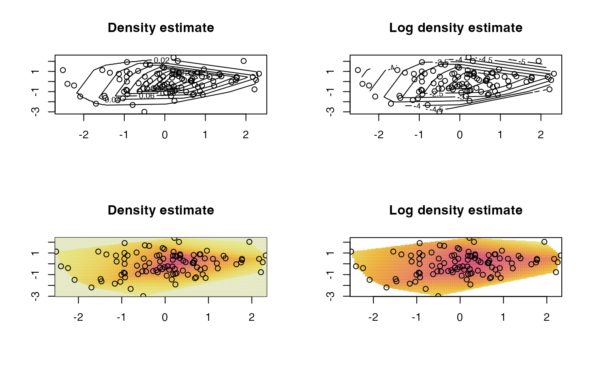

Compute the maximum likelihood estimator of a log-concave density
mlelcd.RdUses Shor's \(r\)-algorithm to compute the maximum
likelihood estimator of a log-concave density based on an
i.i.d. sample. The estimator is uniquely determined by its value at the data
points. The output is an object of class "LogConcDEAD" which
contains all the information needed to plot the estimator using the
plot method, or to evaluate it using
the function dlcd.
Arguments
- x
Data in \(R^d\), in the form of an \(n \times d\) numeric
matrix- w
Vector of weights \(w_i\) such that the computed estimator maximizes $$\sum_{i=1}^n w_i \log f(x_i)$$
subject to the restriction that \(f\) is log-concave. The default is \(\frac{1}{n}\) for all \(i\), which corresponds to i.i.d. observations.
- y
Vector giving starting point for the \(r\)-algorithm. If none given, a kernel estimate is used.
- verbose
-1: (default) prints nothing
0: prints warning messages
\(n>0\): prints summary information every \(n\) iterations
- alpha
Scalar parameter for SolvOpt
- c
Scalar giving starting step size
- sigmatol
Real-valued scalar giving one of the stopping criteria: Relative change in \(\sigma\) must be below
sigmatolfor algorithm to terminate. (See Details)- ytol
Real-valued scalar giving on of the stopping criteria: Relative change in \(y\) must be below
ytolfor algorithm to terminate. (See Details)- integraltol
Real-valued scalar giving one of the stopping criteria: \(| 1 - \exp(\bar{h}_y) |\) must be below
integraltolfor algorithm to terminate. (See Details)- Jtol
Parameter controlling when Taylor expansion is used in computing the function \(\sigma\)
- chtol
Parameter controlling convex hull computations
Details
The log-concave maximum likelihood density estimator based on data \(X_1, \ldots, X_n\) is the function that maximizes $$\sum_{i=1}^n w_i \log f(X_i)$$ subject to the constraint that \(f\) is log-concave. For i.i.d.~data, the weights \(w_i\) should be \(\frac{1}{n}\) for each \(i\).
This is a function of the form \(\bar{h}_y\) for some \(y \in R^n\), where $$\bar{h}_y(x) = \inf \lbrace h(x) \colon h \textrm{ concave }, h(x_i) \geq y_i \textrm{ for } i = 1, \ldots, n \rbrace.$$
Functions of this form may equivalently be specified by dividing \(C_n\), the convex hull of the data, into simplices \(C_j\) for \(j \in J\) (triangles in 2d, tetrahedra in 3d etc), and setting $$f(x) = \exp\{b_j^T x - \beta_j\}$$ for \(x \in C_j\), and \(f(x) = 0\) for \(x \notin C_n\).
This function uses Shor's \(r\)-algorithm (an iterative subgradient-based procedure) to minimize over vectors \(y\) in \(R^n\) the function $$\sigma(y) = -\frac{1}{n} \sum_{i=1}^n y_i + \int \exp(\bar{h}_y(x)) \, dx.$$ This is equivalent to finding the log-concave maximum likelihood estimator, as demonstrated in Cule, Samworth and Stewart (2008).
An implementation of Shor's \(r\)-algorithm based on SolvOpt is used.
Computing \(\sigma\) makes use of the qhull library. Code from this C-based library is copied here as it is not currently possible to use compiled code from another library. For points not in general position, this requires a Taylor expansion of \(\sigma\), discussed in Cule and D\"umbgen (2008).
Value
An object of class "LogConcDEAD", with the following
components:
- x
Data copied from input (may be reordered)
- w
weights copied from input (may be reordered)
- logMLE
vectorof the log of the maximum likelihood estimate, evaluated at the observation points- NumberOfEvaluations
Vector containing the number of steps, number of function evaluations, and number of subgradient evaluations. If the SolvOpt algorithm fails, the first component will be an error code \((<0)\).
- MinSigma
Real-valued scalar giving minimum value of the objective function
- b
matrix(see Details)- beta
vector(see Details)- triang
matrixcontaining final triangulation of the convex hull of the data- verts
matrixcontaining details of triangulation for use indlcd- vertsoffset
matrixcontaining details of triangulation for use indlcd- chull
Vector containing vertices of faces of the convex hull of the data
- outnorm
matrixwhere each row is an outward pointing normal vectors for the faces of the convex hull of the data. The number of vectors depends on the number of faces of the convex hull.- outoffset
matrixwhere each row is a point on a face of the convex hull of the data. The number of vectors depends on the number of faces of the convex hull.
References
Barber, C.B., Dobkin, D.P., and Huhdanpaa, H.T. (1996) The Quickhull algorithm for convex hulls ACM Trans. on Mathematical Software, 22(4) p.469-483 http://www.qhull.org
Cule, M. L. and D\"umbgen, L. (2008) On an auxiliary function for log-density estimation, University of Bern technical report. https://arxiv.org/abs/0807.4719
Cule, M. L., Samworth, R. J., and Stewart, M. I. (2010) Maximum likelihood estimation of a log-concave density, Journal of the Royal Statistical Society, Series B, 72(5) p.545-607.
Kappel, F. and Kuntsevich, A. V. (2000) An implementation of Shor's r-algorithm, Computational Optimization and Applications, Volume 15, Issue 2, 193-205.
Shor, N. Z. (1985) Minimization methods for nondifferentiable functions, Springer-Verlag
Note
For one-dimensional data, the active set algorithm of
logcondens is faster, and may be
preferred.
The authors gratefully acknowledge the assistance of Lutz Duembgen at the University of Bern for his insight into the objective function \(\sigma\).
Further references, including definitions and background material, may be found in Cule, Samworth and Stewart (2010).
See also
logcondens,
interplcd, plot.LogConcDEAD,
interpmarglcd, rlcd, dlcd,
Examples
## Some simple normal data, and a few plots
x <- matrix(rnorm(200),ncol=2)
lcd <- mlelcd(x)
g <- interplcd(lcd)
par(mfrow=c(2,2), ask=TRUE)
plot(lcd, g=g, type="c")
plot(lcd, g=g, type="c", uselog=TRUE)
plot(lcd, g=g, type="i")
plot(lcd, g=g, type="i", uselog=TRUE)

## 2D interactive plot (need rgl package, not run here)
# plot(lcd, type="r")
## Some plots of marginal estimates
par(mfrow=c(1,1))
g.marg1 <- interpmarglcd(lcd, marg=1)
g.marg2 <- interpmarglcd(lcd, marg=2)
plot(lcd, marg=1, g.marg=g.marg1)
plot(lcd, marg=2, g.marg=g.marg2)
## generate some points from the fitted density
## via independent rejection sampling
generated1 <- rlcd(100, lcd)
colMeans(generated1)
#> [1] 0.2094174 -0.1760564
## via Metropolis-Hastings algorithm
generated2 <- rlcd(100, lcd, "MH")
colMeans(generated2)
#> [1] 0.10072359 0.06037948
## evaluate the fitted density
mypoint <- c(0, 0)
dlcd(mypoint, lcd, uselog=FALSE)
#> [1] 0.1573178
mypoint <- c(1, 0)
dlcd(mypoint, lcd, uselog=FALSE)
#> [1] 0.1069506
## evaluate the marginal density
dmarglcd(0, lcd, marg=1)
#> [1] 0.424504
dmarglcd(1, lcd, marg=2)
#> [1] 0.2541608
## evaluate the covariance matrix of the fitted density
covariance <- cov.LogConcDEAD(lcd)
## find the hat matrix for the smoothed log-concave that
## matches empirical mean and covariance
A <- hatA(lcd)
## evaluate the fitted smoothed log-concave density
mypoint <- c(0, 0)
dslcd(mypoint, lcd, A)
#> [1] 0.1380299
mypoint <- c(1, 0)
dslcd(mypoint, lcd, A)
#> [1] 0.106271
## generate some points from the fitted smoothed log-concave density
generated <- rslcd(100, lcd, A)